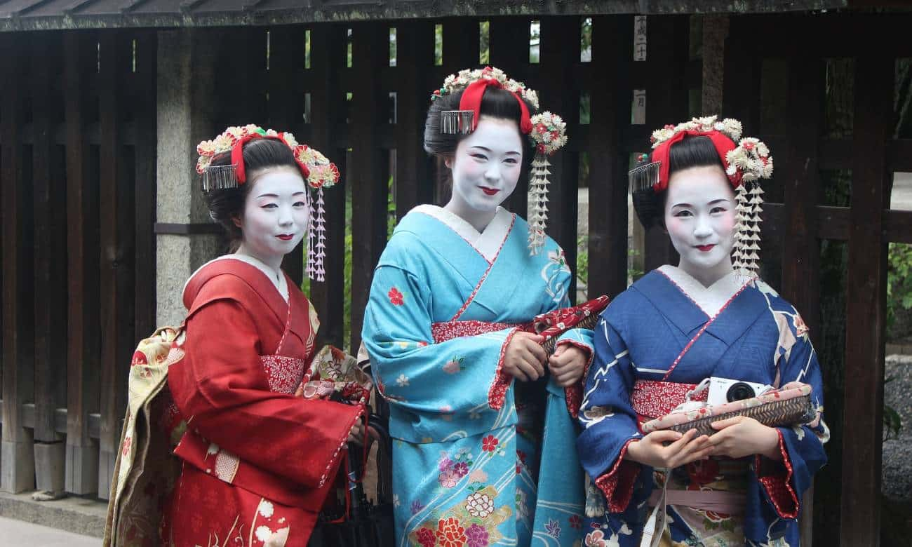
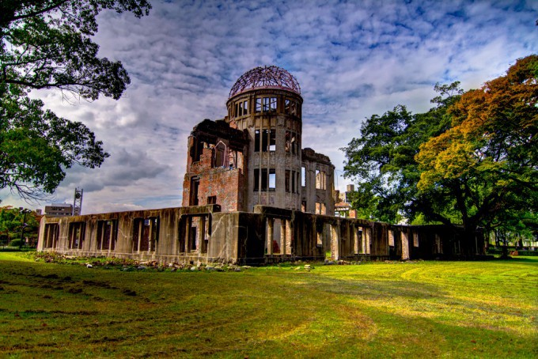

Cultura japonesa

Mount Fuji
Comida japonesa

Cultura

Pontos Turísticos

Gastronomia
POR QUE CONHECER O JAPÃO?
A forte consciência ecológica dos seus habitantes – tão diferente da dos seus vizinhos chineses – fazem do Japão um país limpo e pouco poluído. O que faz brilhar ainda mais os seus belos jardins, os seus parques naturais, as suas frondosas florestas e as suas montanhas célebres, como o Monte Fuji.